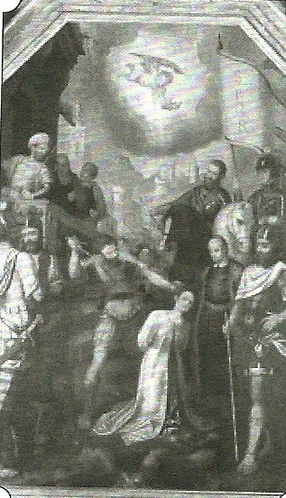
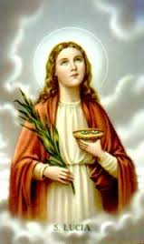
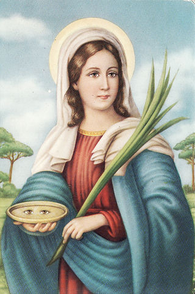
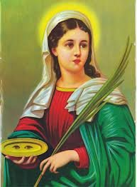

RUMO A ETERNIDADE
FINAL DO MARTÍRIO
Pascácio, irado, temendo a desonra e
a zombaria, mandou fazer uma fogueira ao redor de Luzia e tocou fogo. Luzia falou:
“Eu pedirei ao SENHOR JESUS
que este 
O Prefeito estava louco de raiva, não conseguia acreditar naquilo que estava vendo.
Era o dia 13 de Dezembro de 304. Luzia percebendo que o martírio estava chegando ao fim, levantou a cabeça e com voz forte falou a Pascácio: “A perseguição aos cristãos está terminando, logo chegará a paz para a Igreja e a queda do Imperador Diocleciano”. Deu um suspiro e completou: “Adoro a um só DEUS verdadeiro, e a ELE, prometi amor e fidelidade”.
Mal havia terminado de dizer estas palavras, um soldado, por ordem do Prefeito, cheio de ódio, degolou a moça, sacando a espada cortou a cabeça dela num único golpe.
As palavras proféticas de Luzia, logo se tornaram realidade: dois anos após a sua morte, subiu ao trono da Itália, Constantino, denominado “O Grande”, que no ano de 313 promulgou o famoso édito de Milão, concedendo liberdade ao culto cristão em todos os territórios do Império Romano.
Os cristãos recolheram o corpo dela e a sepultaram nas Catacumbas em Roma. No ano 313, neste mesmo local foi construído um Santuário que lhe foi dedicado. Segundo a tradição, divulgaram a sua história por toda ilha Sicilia, realçando “que ela consagrou a sua virgindade com o martírio, pois a DEUS agrada a pureza e a santidade”.
DEVOÇÃO

Em 1955, o Patriarca Cardeal Roncalli, depois eleito Papa João XXIII, mandou cobrir o rosto da Santa com uma mascara de prata, imitando os traços da face dela. Atualmente ela está num sarcófago de cristal, embaixo da Altar principal da Igreja de São Jeremias e Santa Lúcia de Siracusa. Os restos da Santa foram transladados para esta Igreja em 1861, porque na Igreja onde estava, o prédio foi demolido para a construção de uma estação ferroviária que leva o seu nome: “Estação de Santa Lúcia”.
Na época em que Luzia foi martirizada não ficou nenhuma anotação, registrando o acontecimento numa ata ou numa anotação independente. Somente os cristãos guardaram o fato e entre si comentavam as admiráveis ocorrências e a força da Vontade de DEUS. E da mesma forma, verbalmente foi passando de geração em geração, a quantidade de graças admiráveis, que Santa Lúcia de Siracusa, a nossa querida Santa Luzia, por sua intercessão, alcançava de DEUS em benefício dos fieis que a procurava, rezando em seu túmulo e suplicando a sua eficaz e tão forte proteção.
Somente em 1894, o martírio foi devidamente confirmado, quando se descobriu uma inscrição em grego arcaico sobre o sepulcro dela em Siracusa. A inscrição trazia o nome de “Mártir”, confirmando a tradição oral, desde o século IV.
Mas na verdade, a Devoção a Santa começou a ser cultivada desde após a sua morte, e mais precisamente, com uma quantidade admirável de manifestações sobrenaturais, desde o século V, onde os fieis conseguiram de DEUS, pela intercessão dela, cura da visão, de doenças dos olhos e inclusive de cegueira.
O Papa Gregório Magno (590-604), a incluiu no cânone da Santa Missa. Os milagres atribuídos a sua intercessão a transformaram na Santa que auxilia o povo que a invoca, para obter principalmente a “cura de doenças nos olhos ou da cegueira”. A iconografia da Santa, apresenta imagens de Santa Luzia com uma palma na mão, ou com um livro no colo, ou segurando uma lâmpada de azeite, ou segurando um prato com dois olhos, universalizando a sua vocação:“A Santa dos Olhos”.
SENTIDO DA DEVOÇÃO

A Santa nos oferece um admirável modelo de virtudes, onde realça: a fé, a virgindade, a generosidade, o desapego, a grandeza de um amor filial e a decidida busca de DEUS.
Por fim, a devoção a Santa Luzia, é uma oração humilde e confiante, enaltecendo a presença bondosa de DEUS que nunca falta, para que nos preserve, ou nos cure dos males da visão.
RELÍQUIAS
Em Siracusa existe um admirável tesouro guardado num belo estojo de prata e cristal que são denominados: prendas de Santa Luzia: é um véu, uma túnica e um par de chinelos.
O véu é de seda branca bastante fina com listras de cor amarelo-açafrão. O vestido, em forma de túnica até os pés, é de modelo godê. Da cintura para baixo é bastante largo. Na cintura e nos punhos é justo. É de seda muito fina de cor purpúrea, bordado com arabescos de folhas e flores da mesma cor. O solado dos chinelos é de camurça bastante fina, com correias de couro forradas de gorgorão vermelho. Infelizmente, tanto o véu como a túnica e o solado do par de chinelos, estão em mau estado de conservação.
Existem documentos, há mais de mil anos, escritos a respeito dessas relíquias, e a passagem de um dono para outro, até que elas chegaram a um Mosteiro e finalmente na Capela de Santa Lúcia em Siracusa.
DERRADEIRAS NOTÍCIAS
Muito pouco sabemos sobre a vida de Santa Luzia, assim como da maioria dos mártires em geral da Igreja primitiva. Duas são as principais razões:
a) A mentalidade das
pessoas que anotavam o fato. Isto porque, os antigos escritores anotavam apenas
o que se referia diretamente ao martírio, não se preocupando 
b) Pelo abominável e terrível confisco dos bens da Igreja, feito por toda sorte de perseguidores, principalmente pelos Imperadores pagãos, que abrangeu toda a livraria, os registros e a arqueologia, destruindo barbaramente os livros e arquivos da Igreja. E a destruição foi maciça, embora tenha sido salva algumas coisas preciosas, que estão hermeticamente guardadas nos arquivos do Vaticano.
Então é compreensível, que muito pouco sobrou para contar e descrever a vida heróica de muitos cristãos bem-aventurados. E o que sobrou, sem a menor dúvida, devemos agradecer a Constantino, Imperador Romano, que no ano 313 acabou com as perseguições aos cristãos e fez renascer a paz na Igreja, determinando que as autoridades eclesiásticas, por meio de tabeliães e do pessoal especializado em pesquisas, cuidassem de reunir todos os documentos possíveis, salvando desse modo, muitos dos heróicos e admiráveis fatos ocorridos na História da Igreja.
TRÍDUO DE ORAÇÕES
Gloriosa Santa Luzia, vós que morrestes derramando generosamente o vosso sangue em defesa da fé, nós vos suplicamos, alcançar para nós a graça de continuarmos sempre firmes na fé, para que, confessando constantemente a CRISTO, mereçamos ser reconhecidos por ELE diante do PAI CELESTE.
PAI NOSSO..., AVE MARIA..., GLÓRIA AO PAI...
Admirável Virgem de CRISTO, Santa Luzia, que inflamada de amor a DEUS, vos entregastes inteiramente ao Serviço Divino e lhe consagrastes todos os vossos afetos e as mais puras aspirações de vosso coração virginal, nós vos pedimos com fervor, que nos inflameis o coração com o mais vivo amor a JESUS e à sua Santa Mãe, de tal maneira, que nada neste mundo nos separe deste amor e tenhamos a felicidade inefável de gozar dele por toda a eternidade.
PAI NOSSO..., AVE MARIA..., GLÓRIA AO PAI...
Santa Luzia, que se consagrou a DEUS com voto de castidade perpétua, enfrentando com fortaleza quem tentava violar este voto; e não aceitando de forma alguma adorar falsos deuses, sendo por isso, martirizada, rogai por nós. Alcance de DEUS para mim a firmeza em meus bons propósitos. Protegei-me contra todo mal dos olhos (... aqui cite o problema nos olhos...). Fazei que eu use da minha vista, somente para olhar o mundo e as pessoas com caridade e otimismo, mantendo viva minha fé em JESUS CRISTO, nosso único SENHOR. ELE que vive e reina com o PAI e o ESPÍRITO SANTO, por todos os séculos. Amém.
PAI NOSSO..., AVE MARIA..., GLÓRIA AO PAI...
SANTA LUZIA, SANTA DA LUZ, ROGAI POR NÓS QUE RECORREMOS A VÓS. AMÉM.